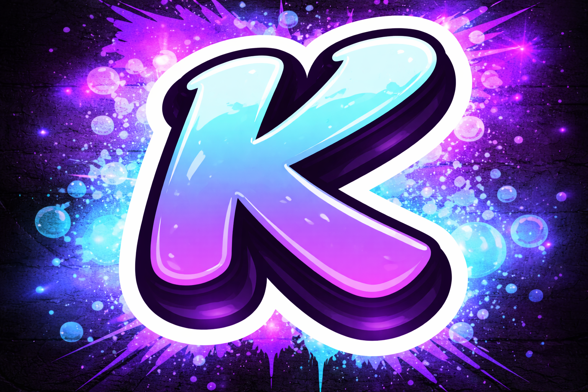

Moderação em massa, sistema de logs completos e personalize texto com embeds.
Criado em 17/03/2026 pelo desenvolvedor @Wagh, o Kosmika nasceu com o propósito de ser o coração tecnológico das comunidades do Discord. Muito além de um simples bot, ele combina um sistema de moderação impecável — com logs precisos e ferramentas de segurança — a uma camada de personalização criativa, permitindo que cada servidor tenha sua própria identidade visual e funcional. O objetivo do Kosmika é claro: automatizar o gerenciamento e proteger o ambiente para que os criadores possam focar no que realmente importa: a interação humana. Com foco em performance e estabilidade, nossa missão é transformar servidores comuns em galáxias organizadas, seguras e prontas para o futuro.